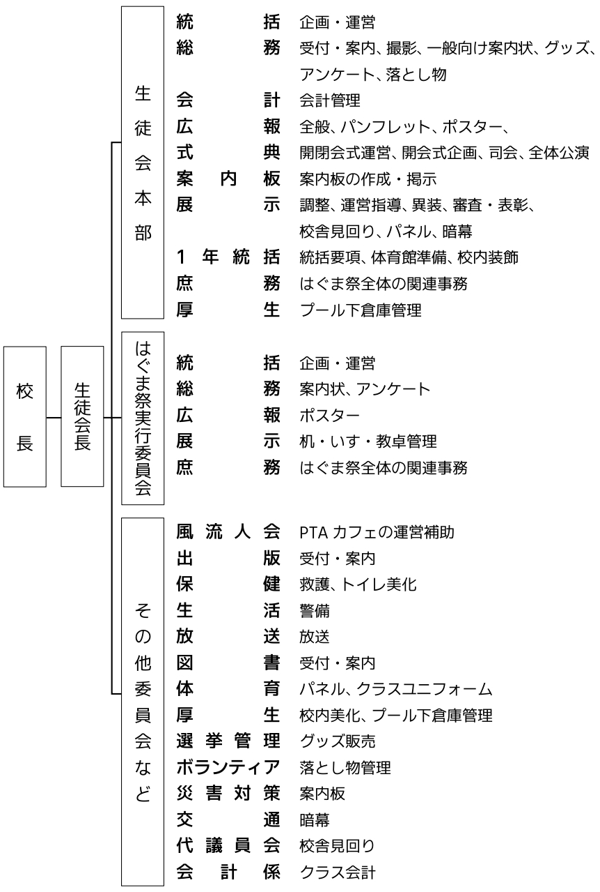
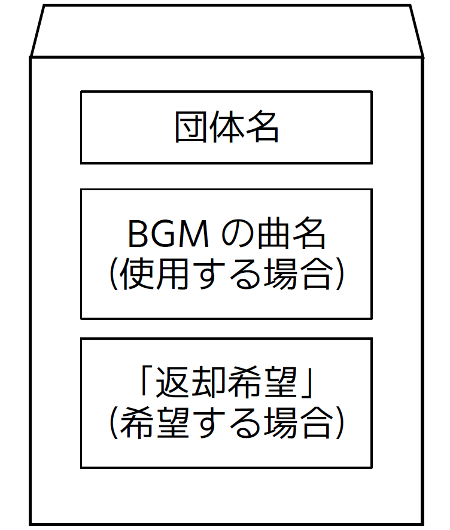

方 針
1. 基本方針
- 部活動、ホームルーム等の平素の研究および活動の成果を校内外に公開し、「地域に開かれ、かつ根ざした学校」として地域との密着を図る。
- 真理を研究し、さまざまな活動を通して、創造の精神を養う。
- 協調、親和、思いやりの態度を養うとともに、自主性を育成し、学校生活を豊かなものとする。
2. 活動方針
- 文化部の展示、発表、公演を中心とした、内容、形式ともに格調高いはぐま祭をめざし、その実現に努める。
- テーマおよび基本方針に基づき、それぞれの部やクラスの特色を生かした活動に取り組み、来校された方に活動成果を知っていただく機会とする。
- すべての活動において常に各団体責任者の先生と相談し、その指導に従う。
3. 注意事項
- （優先順位）
はぐま祭の円滑な運営のため、委員会 > 文化部展 > クラス展 > 校内装飾 の順で優先順位を設ける。
注 意校内分掌および生徒会本部は委員会に含む。教室配置や備品配布、机やいすの移動はこの順番で行う。
- （参加形態）
部やクラスなど、団体単位での希望制での参加を基本とする。個人、有志団体、関係者以外の参加は生徒会本部に申請し許可を得たもののみ認める。なお、複数団体の混合団体についても、生徒会本部との協議により可否を審査する。
- （著作権）
はぐま祭に関するすべての制作物は、著作権を侵害してはならない。各団体責任者は、著作権について十分注意し、その責任のもと制作に取り組む。
- （その他）
- 要項や配布物には目を通し、規則を遵守する。規則に違反した場合は、減点等の処分を下す。修正を求められたときは指示に従う。
- 周囲への配慮を欠いた行動は、厳に慎む。
- ペナルティー制の開始までは、下校時刻 18:00 を遵守する。下校時刻の詳細は、「ペナルティー制」を参照のこと。
- 登下校時の制服は、休日を含め制服とする。
- 貴重品の管理は、各自や各団体の責任のもと徹底する。ロッカーは必ず施錠する。
- 廊下や階段で立ち止まる、座り込む等の行為により通行を妨害してはならない。宣伝活動も同様である。特に、公演会場付近においては十分配慮する。
- 販促物の配布、展示場所以外でのポスターないし案内板等の掲示は、これを禁止する。ただし、PR ポスターはこの限りではない。PR ポスターは生徒会本部が管轄し、掲示する。
- 諸連絡は、プリントを配布して伝達する。集配ボックスを必ず確認する。各クラスの文化祭実行委員は、プリントの内容の周知をする。
- すべての活動は、常に各団体責任者の先生の監督・指導のもと行う。
- 当日、体育館集合時は、効率よく点呼するため、番号順に整列する。服装は、クラス T シャツとする。
- 生徒会本部からの召集において、当日その対象者がいない場合は、必ず代理を立てる。後日、その団体に個別に連絡することは行わない。
- 準備を含め、はぐま祭の円滑な運営のため、決定事項などは生徒課および生徒会本部に一任する。
運営組織図・係分担表
運営組織図を表示する
タイムテーブル

制 作
1. 指 針
- テーマに基づいた展示を行う。
- 常に責任者と協議し、その指導にしたがって良識ある活動を行う。
- 参加を希望する団体は、各種申込用紙を提出する。内容に不備のある場合は、責任者を通じ差し戻す。
2. 制作内容の注意点
- 食品の取り扱いについては、別紙を参照のこと。
- 大きな音を出すなど、周囲を妨害しかねない行為は禁止する。
- 展示において、既製品のゲーム機を使用してはならない。
- 参加申し込みにおいて許可された場所以外で活動してはならない。机・いすの移動までは、部展は各部室、クラス展は各クラスで活動する。
- 所属団体外の者に、参加を強要してはならない。
- 展示会場については別紙を参照のこと。
はぐま祭の内容に関しては、生徒会本部、生徒課、課長主任会、職員会議で審議し、最終決定は校長が行う。
3. クラス展の展示場範囲
- 28 HR を除く 2 年のクラス展は、教室の半分を使用する。教室は、廊下側と窓側で分割する。
- 28 HR および 3 年のクラス展は、1 教室すべてを使用する。
4. 展示場制作の注意点
- 熱中症対策のため、各展示場では常時喚起する。換気方法は次のとおりである。

- 廊下は展示場として使用したり、ゲートや装飾などを除く一切のものを置いたりしてはならない。ゲートや装飾などを設置する場合は、廊下を 190 cm 以上開ける。
- 蛍光灯を取り外したり、付近に物を設置したりしてはならない。
- エアコンは、展示物で覆ってはならない。
- 天井、壁、廊下、窓やサッシなどへの釘、ガムテープ、ビニールテープ、画びょうなどの使用は禁止する。また、以下の行為をしてはならない。
- 塗料・ワックスがはがれたり、跡が残ったりする部分へのテープ類の使用。
- 黒板へのテープ類の使用。
- スプレー、ペンキ類の使用は、下記の通りにする。なお、使用はすべて屋外で行い、使用にあたっては、活動場所をすべて責任者に伝える。
- 使用時はブルーシートで床を覆い、その上に新聞紙、段ボールなどを敷く。
- スプレーは風で拡散することのないよう注意する。
- 絵の具の付着のあるものは、校舎の水道で洗ってはならない。はぐま会館となりの水道または武道場 1 階の水道を使用する。
- 火気は、その一切を禁止する。
- 工具およびカッターなどの取り扱いにあたっては、けがのないよう注意する。校舎を破損することのないよう、板を下に敷く。
参 考天井のボード 1 枚を張り替える場合、約 10 万円かかる。
- 準備に際し使用するものの一切は、各団体で用意する。学校の備品は、特別に許可を得た場合を除き、使用してはならない。なお、生徒会本部および事務室は、用具の貸し出しを行わない。
- 個人の所有物には、それぞれ氏名を記入する。
- 特別教室などの備品を使用する場合は、管理者に問い合わせ、その指示に従う。
- 大量の電力を消費する器具を使用してはならない。
- 定時制と教室を共用する教室では、定時制の掲示物を外してはならない。
- 職員室および準備室付近などで作業してはならない。図の黒塗りの部分で作業してはならない。
- 準備室前での作業は、担当教員の許可を得たうえで、業務を妨害しないようにする。
- 他団体の教室前では、教室の使用の有無を問わず作業しない。ただし、責任者同士の協議により合意を得た場合はこの限りではない。
- はぐま祭前日の午後、生徒課教員による展示会場の見回りを実施する。違反ないし危険な部分があった場合、責任者に通達する。当該箇所は開会式までに修正する。
- 展示会場のごみ箱は原則撤去し、使用団体ごとに保管する。団体の判断によりごみ箱を設置する場合は、各団体がごみ処理の責任を負う。
- 窓を暗幕ないし段ボールで覆う場合は、以下の点に注意する。
- 窓の開閉の妨げにならないように覆う。
- 破損および転落の危険があるため、窓を開けたまま覆わない。
- 覆った場所に来客が寄りかかることのないよう、掲示ないし説明にて注意を徹底する。
- 窓の付近に、高さのあるアトラクションを設置してはならない。机は、窓の付近で使用してはならない。
- 教室の扉および窓を取り外すことはできない。
- エアコンは、熱中症対策等の観点から、適切に使用する。

5. 机・いす・教卓
- （使用制限）
数量に限りがあるため、使用制限を設定する場合がある。使用に際する優先順位は、「方針 3. 注意事項 (1)（p. 1）」を参照のこと。
机・いす・教卓以外のものについては、「制作 4. 展示場制作の注意点 (11)（p. 8）」を参照のこと。
数量は文化祭実行委員が集計する。なお、教卓は 27 台である。
- （使用数）
第二次申し込み用紙に記入する。申し込み後は原則変更を受け付けない。
- （移動先および移動時間の決定）
担当教員が「机・いす・教卓の移動表」を作成し決定する。
注 意第二次申し込み用紙の提出内容を参照する。表の作成にあたり時間を要するため、第二次申し込み用紙の提出後は希望数の変更を一切認めない。
6. パネル・暗幕
- （使用制限）
パネル・暗幕の数量には限りがあるため、以下の通り制限を設ける。
- パネル：各団体 3 枚以内（2 年クラス展への配布後余りがある場合に限る）
- 暗 幕：各団体合計 45 平方メートル以内
注 意教室を分割する場合の仕切りはこれに含めない。部展については、パネルに余りがある場合、追加の配布を行う場合もある。
- （使用数）
第二次申し込み用紙に記入する。申し込み後は原則変更を受け付けない。
- （在 庫）
パネル・暗幕の在庫数はそれぞれ次の通りである。
- パネル：113 枚
注 意生徒会本部の備品のサイズは、（縦） × （横） = 90 cm × 180 cm。
- 暗 幕：次の表の通り。ただし、性質上ある程度の誤差を含む。

- パネル：113 枚
- （配 布）
配布の割り振りは、実行委員会が調べる在庫数に基づいて生徒会本部が行う。配布時に不足ないし破損等があった場合は、各団体と実行委員会が協議し対応する。
パネルの担当は体育委員会、暗幕の担当は交通安全委員会。
7. 会 計
- （経費の上限）
展示経費の上限を以下の通りに定める。
- 部展・委員会：上限なし
- 1 年校内装飾：38,000 円（1 年生全体）
- 2 年クラス展：60,000 円
- 3 年クラス展：90,000 円
- （会計報告）
各会計担当者は、生徒会本部が配布する会計報告書を提出する。物品の購入にあたっては、領収書の交付を受ける。レシートは認められない。
- （その他）
- 経費は、すべて各団体が徴収し用意する。
- 金銭の取り扱いについては各団体が責任を負う。
- 経費の徴収にあたっては、妥当性、所属生徒の同意、責任者の承認が必要である。各団体の責任で対応する。
- 出費は最低限におさえ、集金の過不足は避ける。
8. 申し込み
- （第一次申し込み）
- 第一次申し込みの内容に基づき、パンフレットの制作を印刷会社に委託する。
- 空欄および未選択の部分は、希望がないものとみなす。
- 提出期限を厳守する。
- 内容に不備のあるときは差し戻す。
- （第二次申し込み）
- 第一次申し込みが承認され次第、第一次申し込み用紙の返却と同時に配布する。
- 机・いす・教卓の使用希望数の変更は一切受け付けない。
- 提出期限を厳守する。
- 内容に不備のあるときは差し戻す。
壁・ゲートの作り方
1. 壁を使用する
- 机を 2 段または 3 段積んで、結束バンドやビニールひもで固定する。
- 段ボールで作った壁や暗幕などを机の柱に固定する。ビニールひもに加えガムテープで補強する。


2. 段ボールを使用する
- 同じサイズの段ボールを積み、ガムテープや結束バンドで固定する。
- 一番下の段ボールの中に、ペットボトルなど重いものを入れて固定する。養生テープなどテープ類は禁止。

服装・異装
1. 準備期間中の登下校の服装（休日を含む）
- 登下校時の服装は制服のみである。ただし、休日準備の登下校の際は体育ジャージ、部活動のユニフォームも認める。クラスユニフォームないし私服は認めない。
- 部活動で登校する場合の服装については、各部顧問の指示に従う。
- 作業中、制服が汚れることを避けるため着替える場合は、学校指定の体操服、ジャージ、部活動時の服装、クラスユニフォームのいずれかを着用する。
2. 当日の服装
- （当日の服装）
次の 4 種類のみ認める。
- 制服
- 体操服・ジャージ
- クラスユニフォーム（下半身は制服。男子はスラックス、女子はスカート）
- 申請し許可を得た服装
- （体育館集合時の服装）
次の通りにする。なお、制服の下にクラスユニフォームを着用してはならない。点呼の際、担任と実行委員が確認し指導する。
- 開会式・SHR：制服、クラスユニフォーム
- 閉会式：クラスユニフォーム
注 意制服、クラスユニフォームの着用に際して、極端な加工があるときは異装としてみなされ、指導の対象となる。
- （その他の服装）
異装の許可を得ていない私服を着用してはならない。
- （寄せ書きなど）
クラスユニフォームの加工ないし寄せ書きは、これを禁止する。
- （髪 型）
普段と同様、良識のあるものにする。
- （当日の登下校時の服装）
1 日目、2 日目のすべての登下校時は、制服を着用する。
3. 異装の定義
- 異装とは、以下 3 種以外の服装のことである。
- 制服
- 学校指定の体操服・ジャージ
- クラスユニフォーム
- 服装が、普段の学校生活で特別に指導されない状態である → 異装ではない
- クラスユニフォームを、体育大会ないし球技大会と同様に着用する → 異装ではない
- 異装を極端に加工したり、髪飾りをつけたりする → 異装である（体育大会ないし球技大会では認められない）
- クラスユニフォームを着用しながら、私服のスカートを着用する → 異装である（スカートが制服でない。「2. 当日の服装 (1) - 3」を参照のこと）
- 異装は、以下の場合にのみ認められる。
- PR
- 一般公開時の展示（ただし展示場内のみ）
- 一般公開の準備（映像撮影など）
4. 異装についての具体的方針およびかかる手続き
- 異装については、職員との協議により一定の規制を行う。「異装申請書」を生徒会本部に提出したのち、生徒課で審査し、職員会議で最終決定を下す。なお、不備のあるものは差し戻し、再び提出する。
- 異装は展示内容に沿うもののみ認められる。
- ペイント、顔面を覆うことにより人物を特定できないものは、これを禁止する。
- 異装の内容については、覆う程度、生徒の活動場所の制限、キャラクターの展示テーマへの存在意義などにより、条件を付加したうえで認められるものもある。
- 異装を着用する者は、常に身分証明書を携帯する。
PR 動画
1. 目 的
- 以下の内容を遵守し、展示内容に沿った企画を立案する。
- 単なる寸劇ではなく、各団体の展示内容を紹介する動画を制作する。
- 制限時間に収まる PR 動画の作成を通し、構成を工夫する経験を積み、公開を通し団体に対する評価を高める。
2. 発表方法および時間
- 発表は、開会式終了後に行う。
- 発表方法は映像の上映のみである。
- 発表時間は 45 秒を厳守する。超過した分は生徒会本部が編集し切り取る。
- 発表時は、部の PR、クラスの PR、の順である。クラスの PR については、28 HR および 3 年各クラスのみである。
3. 出演者
- 出演者は、教員を含めた各団体の関係者のみとする。ただし校内の者に限る。
4. 服 装
- 動画内に限り、服装には制限を設けず、「異装申請書」の提出も求めない。ただし、良識の範囲内にとどまる。動画は、生徒会本部および生徒課がチェックする。
5. 手続き
- BGM、映像はともに各団体が用意し、SD カードまたは USB フラッシュメモリーで提出する。各媒体は各自で用意する封筒（長形 3 号）に入れ、封筒に団体名を記入する。返却を希望する場合は封筒に「返却希望」と記入する。詳細は図の通り。
注 意拡張子は mp4 のみ受け付ける。その他の拡張子のものは上映できない。

- 編集は各団体で行う。生徒会本部は編集をしない。
- 再提出は、事情により再生できない場合のみ行う。
- 締め切り後は提出の一切を受け付けない。
PR ポスター
1. PR ポスターの定義
- PR ポスターとは、各団体の活動内容を宣伝するための校内掲示用のポスターのことである。
- 制作の有無は各団体にゆだねる。希望は第一次申し込み用紙に記入する。
- デザインは自由とする。提出前に各団体の責任者の承認を得る。
- 片付けの際には必ず撤去する。処分については団体が責任を負う。
2. 諸規定
- ポスターは、B5 縦サイズで 6 枚とする。色は自由とする。印刷は各団体で行う。
- 提出のあったポスターは、左下に承認印を押し、生徒会本部が掲示する。印と重なって差し支えのないデザインにする。
- 提出するポスターのうち 2 枚には、裏面の四つ角にマグネットシートをつける。その他 4 枚のうち、1 枚は保存用、3 枚は掲示用として使用する。これら 4 枚にはマグネットシートをつけない。
全体公演
1. 公演の目的
- 公演の目的は、「はぐま祭を文化部の活動成果の発表の場とするため」、また、「公演を通し生徒の感性および創造力を養うため」である。
2. 公演時間
- 公演時間は、弦楽部 15 分、演劇部と弦楽部の共演 30 分、休憩 10 分、吹奏楽部と書道部の共演 25 分の、計 80 分である。
注 意時間は開会式の進行により前後するため、当日の生徒会本部の指示に従う。PR 後の 10 分の休憩時間の間に準備を行い、公演の開始に遅れることのないようにする。
体育館公演
1. 体育館リハーサル
- 体育館で公演を行う団体および式典を行う生徒会本部のため、リハーサルを行う。
注 意全体公演以外のリハーサルは各団体で時間を調整する。

2. 体育館ステージ
- 仮設ステージは、机を縦 7 台 × 横 17 台配置する。下記のレイアウトにしたがってステージでの発表を行う。
審査・ペナルティー
1. 審 査
- （対 象）
3 年クラス展では審査を行う。(2) の審査項目について、どの展示が最も優れていたか集計し、項目ごとの得点を算出する。上位 3 クラスが表彰の対象となる。
- （審査項目）
審査項目は以下の通りである。審査は 1, 2 年生および来場者が行う。
クラス展
- 展示を楽しめたか
- 展示のデザイン
- 満足度
部活動展
- 部活動への理解が深まったか
- 創意工夫を感じたか
- 満足度
2. ペナルティー対象
- 次の場合、1 回につき持ち点 20 点から 1 点ずつ減点し、0 点となった団体については出展停止の処分を下す。規則の遵守を心がける。
- 終了時刻を守らなかった場合
- 要項の違反がみられた場合
- 室長が見回り当番に遅刻または無断欠席し、かつ代理もいない場合
- 教室の消灯、窓の施錠がなされていなかった場合
- 生徒会本部からの召集に来なかった場合
- 各種届出の提出期日を超過した場合
3. ペナルティーチェック
2, 3 年各クラスの室長および生徒課職員が担当
- ペナルティーチェックは、それぞれ当番になっている室長の責任のもと確実に行う。
- 当番の室長は、見回りでペナルティー対象にあたる点があれば、当該団体の教室の黒板に注意点を書き入れる等の注意喚起をする。
- ペナルティーについて不明点があれば、その日の当番にたずねる。
- 生徒会本部は、チェック表と集計表を、ペナルティー期間開始の 1 週間前に代議員会議長へ渡す。代議員会議長は紛失のないよう保管する。
- ペナルティーチェック当番の室長は、以下の手順にのっとってチェックを行う。
- 準備終了時刻の 10 分前に職員室前に集合する。代議員会議長は、当番の遅刻欠席がないかチェックする。
- 当番は、職員室前で代議員会議長からチェック表を受け取る。
- 終了時刻になったら、当番は見回りを開始する。見回り順は代議員会議長があらかじめ決定する。
- 代議員会議長は、当番が見回りを始めたら、生徒会室にその旨を伝え、下校する。
- 当番は、チェックが終わり次第、チェック表を代議員会顧問の机上に提出する。
- 代議員会議長は、次の日の準備が始まったら、チェック表を代議員会顧問から受けとる。
- 代議員会議長は、ペナルティー対象の最終日に、チェック表がすべて集まり次第集計をする。集計が終わったら、チェック表と集計用紙をファイルにとじ、2 日目の朝の体育館での SHR までに本部役員に手渡す。
4. その他の注意事項
- ペナルティーを受けることのないよう、終了時刻 30 分前には片づけを開始する。責任者は片付け開始を指示する。
- ペナルティー制施行前は、16:30 に下校する。ただし、休日については責任者と協議する。休日の完全下校は 15:30 である。
- テスト週間およびテスト期間中（5 月 15 日（水）～ 23 日（木））は、準備の一切を禁止する。
- 他教室を使用している部ないし団体は、そのクラスの迷惑となることのないよう、使用前に、代議員会議長に使用教室と時間を報告する。
- 消灯および施錠は、各使用団体の責任のもと徹底する。
- 他の団体の作業ないし生徒会本部の運営は、これを妨害してはならない。団体の活動の制限、出展禁止などの処分を下す場合がある。
前日準備・片付け
1. 机・いすの移動
- 移動は、基本的にその机・いす・教卓のある教室の生徒ないし清掃担当の生徒が担当する。
具体例25 HR を A 部が使用するとき、移動は 25 HR が担当する。
- 各教室の移動指示および保管場所への受け入れ指示は、職員が行う。
- 移動は、3 つの時間帯（A, B, C）に分けて行う。順番は以下の通りである。
- 準 備：A → B → C
- 片づけ：C → B → A
- 移動が完了するまで、その教室の使用団体は準備を始めない。ただし、各責任者間で了承がなされた場合は、特別にこれを認める。
- 机・いすの保管場所からの持ち出しは、これを禁止する。必要のある場合は、各保管場所の管理者に持ち出す数量を伝え、許可を得る。生徒会本部および文化祭実行委員会は、これに一切関与しない。
2. 体育館の会場設営
- （内 容）
体育館にシートを敷き、いすと長机（体育館入り口にあるもの）を並べる。ただし、長机は放送委員会用のものであるため、放送委員会が用意している場合もある。
- （準 備）
前日準備の時間に実施する。各教室の机・いすの移動が終了し次第、体育館に集合する。ただし、委員会ないし運動部で役割のある生徒は、それを優先する。仮設ステージは、14 HR が担当する。
- （片づけ）
閉会式終了後に実施する。各教室の机・いす移動が終了し次第、体育館に集合する。
- （いすの配置）
いすは、各クラス 44 脚用意し、各列 4 脚配置する。前後にいす 1 脚分の空間をつくる。
3. パネル・暗幕の配布と返却
- （配 布）
配布は、前日準備の際に行う。優先順位は「方針 3 (1)（p. 1）」の通り。
- 場 所：パネルは生徒ホール、暗幕はコモンテラス
- 手 順：あらかじめ必要な分をまとめて用意してあるので、実行委員は、破損がないことを確認したうえで受けとる。
- （返 却）
返却は、はぐま祭 2 日目の片づけの際に行う。
- 場 所：グラウンド南、プール下倉庫前
- 手 順：実行委員と運動部の生徒で、破損の有無、年度の記入などを確認し、搬入する。
- その他：暗幕は、サイズが見えるようにたたむ。借りたときと同じ状態で返却する。教室を分割するパネルは、各教室の使用団体が受け取り、返却する。破損のあった場合は、破損させた団体が責任のもと弁償する。その際の手順は以下の通りである。
- 実行委員長は、破損させた団体を記録し、返却が完了したのち、生徒会本部へ報告する。ただし、破損のなかったときは報告の必要はない。
- 当該団体責任者の生徒は、責任者の教員に申し出たうえで、破損した暗幕を生徒会本部へ持参し報告する。
- 破損した暗幕は、当該団体が弁償し、はぐま祭の終了後 2 ~ 3 週間以内に生徒会室へ提出する。
4. 展示会場のドアおよび窓
- ドアは取り外しできないため、勝手に動くことのないよう、ストッパーなどを用いて固定する。ただし、テープなどで固定してはならない。
5. 廃棄物の処理
厚生委員会が担当する。
- 保健課、厚生委員会の指示に従って分別を行い、時間内に片づける。
- コンテナやトラックの場所については、厚生委員会から連絡がある。
- 廃棄方法は、保健課から配布されるプリントに従う。
- 砂、土、レンガ、ブロックは取り扱わない。各団体の責任のもと処分する。
- プール下倉庫には、来年度使用できる制作遊具のみ保管できる。その他のものは各団体で処分する。倉庫前にいる保健課担当教員と厚生委員の指示に従う。以下の作業および確認は、各団体責任者が行う。
- （場 所）
サッカーグラウンド南
- （搬入対象）
制作年度から 3 年を経過していないもの（記入された粘土が R4 以降のもの）
- （注意事項）
- 倉庫は屋外であるため、必ず靴を着用する。
- 修理が必要であるものは搬入しない。
- 搬入時、わかりやすい位置に年度（R6）を記入する。
- 制作年度から 3 年が経過し、使用されなかったものは、厚生委員会が片づけまでに処分する。
- （場 所）
6. 諸注意
- 全員が協力し、時間内にすべての作業を完了する。作業が早く終わった団体は、他の団体を手伝う。
- 使用した教室・体育館および廊下は、使用団体の責任のもと、すべて使用前の状態へ片づけて復旧する。復旧状況は各教室の管理者が確認し、汚れや傷などがある場合は、管理者が使用団体へ指示し、復旧させる。
- 機材の運搬にあたっては、引きずって校舎を傷つけることのないようにする。
- 暗幕およびパネルの破損などがあった場合は、速やかに責任者へ申し出て、各団体で弁償する。
- 休日を含め、下校時には消灯と窓の施錠を徹底する。
後夜祭
1. 参加上の注意
- 会場である体育館に、17:30 の開始をめどに入場する。ただし、途中は自由に入退場できる。
- 体育館シューズを必ず着用する。
- 出演を希望する団体は「後夜祭出演届」を提出しなければならない。詳細は「3. 出演申し込み」を参照のこと。
- 各団体の展示の片づけが終わっていない場合は参加できない。
- 公演が終わり次第、役割のない生徒は速やかに下校する。すべての生徒は、19:30 の完全下校までに必ず下校する。
2. 実行委員会
- 準備、運営補助は、応援委員会、文化委員会、放送委員会および出演者が担当する。内容については、生徒会本部から逐次連絡する。
- 後夜祭の終了後は、警備担当が生徒の速やかな下校を呼びかける。
3. 出演申し込み
- 希望団体は、生徒会本部から「後夜祭出演届」を受け取り、記入して提出する。届の記入内容に基づき、生徒課担当教員から出演の許可を受ける。
- 届の提出のない団体、また出演の許可を受けていない団体は、出演できない。
- 届の提出期日を超過したときは、その一切を受理しない。
- 希望団体が多く、出演が難しい場合、次のとおり出演団体を選定する。
- 上級生を優先して選定する。
- 上記 1 で決定しなかった場合、責任者へ連絡するので、責任者で協議し、期日までに生徒会室へ報告する。協議に生徒会は関与しない。
- 上記 2 までに報告がない場合、生徒課の担当教員に決定を依頼する。
- 出演にかかるすべての準備および機材は、出演団体が用意し、責任を負う。生徒会本部、学校その他の団体は関与しない。
4. タイムテーブル
- タイムテーブルは以下の通りである。
注 意各持ち時間は、準備、片づけ、移動の時間を含める。時刻は変更できない。定刻を遵守する。出演者は、終了後速やかに機材を片付ける。
5. リハーサル
- ステージや後方ギャラリーの使用について、およびリハーサルのスケジュールは、責任者の協議により決定する。
- 体育館で活動する部の都合によっては、使用できない可能性もある。体育館の使用に関しては、体育館で活動する部の顧問教員に申し出て、指示に従う。
当日の運営
1. 放 送
- はぐま祭に関連する放送は、放送委員会が放送室から行う。放送する内容があれば、放送委員会へ依頼し、指示に従う。
- 準備期間中、17:00 以降は定時制の迷惑となるため、放送は行わない。
- 当日、緊急を要する放送以外は、放送委員会へ依頼する。緊急の放送は職員室から行う。ただし、体育館公園の間、体育館には放送を行わない。
注 意放送委員会は、常に依頼を受けられるよう準備しておく。
放送委員会が担当する
2. 外 出
- 職員本部（会議室）で「外出届」を受け取り、記入し、提出する。なお、その際、各団体責任者の教員の印をもらう。
- 服装は制服のみとする。
3. 落とし物
- 準備期間およびはぐま祭終了後は、生徒課の落し物担当へ届ける。
- 当日は、職員本部（会議室）へ届ける。
その他
1. 実行委員会
- 第 1 回前期実行委員会（4 月）で、前期委員会の活動計画とともに、はぐま祭での役割を確認する。生徒会室に、前期委員会活動計画書を提出する。
- 第 2 回前期実行委員会（5 月）で、はぐま祭での仕事内容を確認し、周知徹底する。なお、今回は必要があると認めた場合のみ委員会を招集する。実施の可否は、各委員会顧問と協議し、決定する。提出書類はない。
- 第 3 回前期実行委員会（6 月）で、はぐま祭の反省とアンケートを実施する。アンケートは Google Forms で実施する。QR コードを委員会の招集日までに配布する。はぐま祭反省報告書を提出する。
注 意文化祭実行委員は、生徒会本部から貸し出されたファイルを返却する。実行委員会が回収し、生徒会室まで届ける。ファイルを紛失ないし破損した場合は、生徒会室にその旨を申し出て、同じ規格のものを 1 週間以内に購入し届ける。
2. リーダー研修会
- はぐま祭の事前打ち合わせを、生徒課、生徒会本部、各団体責任者で行う。日程は逐次連絡する。なお、当日欠席者のいる場合は、代理が出席する。
3. ブルーシートとファイルの配布
- （ブルーシート）
校舎 2 階北西の倉庫に保管してある。配布も同じ場所で行う。ペナルティー制施行までに配布する。回収の期限は逐次連絡する。
注 意汚れがなく、ブルーシートが乾いている確認し、HR がわかるように折りたたむ。
- （ファイル）
文化祭実行委員が、関連の資料を保管する目的で、各クラスに 1 冊ずつ配布する。ファイルは、委員が確実に保管する。第 1 回前期実行委員会で配布し、第 3 回前期実行委員会で回収する。
文化祭実行委員会が担当する。
4. 昼 食
- いずれの生徒も、各使用教室やレストルーム、食事場所の用に供する各教室など、展示ないし通行の妨げにならない場所で、各自昼食をとる。
- 体育館後方およびコモンテラスを、2 日目の 11:30 から 13:00 にかけて開放し、食事場所の用に供する。
- 来場者は、PTA カフェの展示教室（共通履修室北・中）ないしレストルームで昼食をとるものとし、食事場所としてのレストルームの使用は、来場者に優先される。
5. 生徒の更衣場所
- 更衣は、7:30 から 8:15 までの間に、男子は音楽室、女子は 3 年生が女子更衣室、1, 2 年生が卓球場で行う。
- 更衣室の開錠および施錠は、生徒会本部が行う。
- 下校時の更衣場所は、設けられない。
6. 下 校
- （前日準備）
1 年生は、11:45 の SHR 以降、装飾や部活動展準備が終了している場合は、各自で解散する。
2, 3 年生は、クラス展の準備が終わっていれば、点検が終了し次第、各自で清掃し下校する。
いずれの生徒も、16:45 に完全下校である。 - （1 日目）
いずれの生徒も、17:00 に完全下校である。
- （2 日目）
19:00 に後夜祭が終了し次第、関係者はすばやく片づけを始め、その他の生徒は下校する。
いずれの生徒も、19:30 が完全下校である。